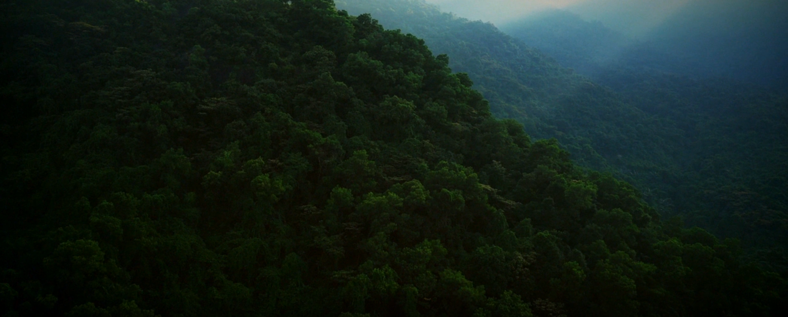

Pueblo MUMU · Cultura y territorio
El Mojojoy:
un saber ancestral
Gastronomía, cultura y territorio del pueblo Uitoto / Murui-Muinane.
Comenzar el recorrido01 — Territorio y memoria
Una historia viva
Un pueblo,
un territorio.
El pueblo Uitoto, también conocido como Murui-Muinane, habita territorios de la Amazonía colombiana y peruana. Su historia, su lengua y su relación con la selva forman parte de un conocimiento que se transmite entre generaciones.
Este recorrido propone acercarse con respeto: sin reducir una cultura viva a una curiosidad ni separar sus alimentos del territorio que los hace posibles.
Conoce el propósito del proyecto ↗
Más allá del titular
El Mojojoy
No es un reto viral. Es alimento, conocimiento y una práctica vinculada al territorio.
El mojojoy es el nombre común de larvas de ciertos escarabajos que se desarrollan en palmas. En el brief se describe una práctica tradicional que aprovecha palmas viejas y busca proteger las sanas.
05 — Fuentes y créditos
Consultar también es cuidar
Conoce las fuentes.
La Agencia de Noticias UNAL, Radio Nacional de Colombia, ONIC y Agronegocios.co.
Volver al inicio ↑Las personas que lo hacen posible.
Alejandro Moreno Ortiz
Nicolas García Soto